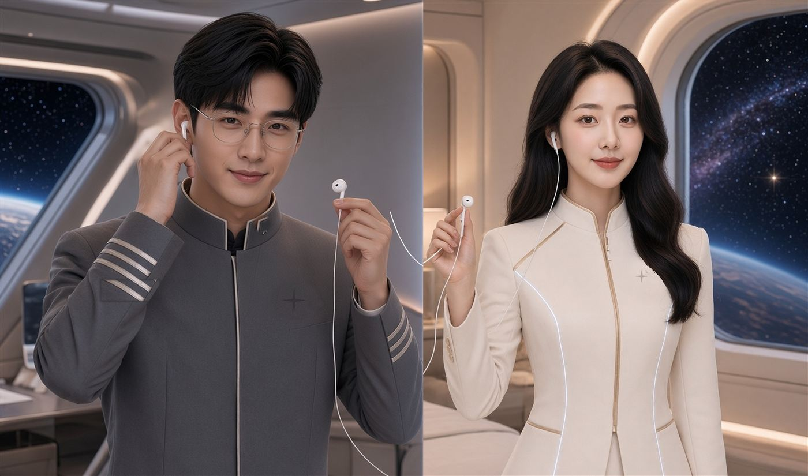

📡 TRANSMIT // LSA-711
傳訊給我
發送一段訊號到 LSA-711。不需要真名，也不需要有正事。
讀了哪一篇想到什麼、想問五層框架怎麼用，或只是想說「我也是這樣想」，都可以。

傳送之前，先知道這幾件事
- 我會盡量看每一則，但不一定每則都能回覆。
- 留言會寄到我的信箱，並存在我自己的 Google 試算表，也會記下你是從哪一頁點進來的（讓我知道你剛讀了什麼）。不會公開，也不會分享給任何人。
- 不需要提供真實姓名，也請不要寫出其他人的可辨識資料。
這裡不是即時諮詢，也不是心理諮商。如果你正處於危險之中，請立刻撥打 1925 安心專線（24 小時）、110 或 119。